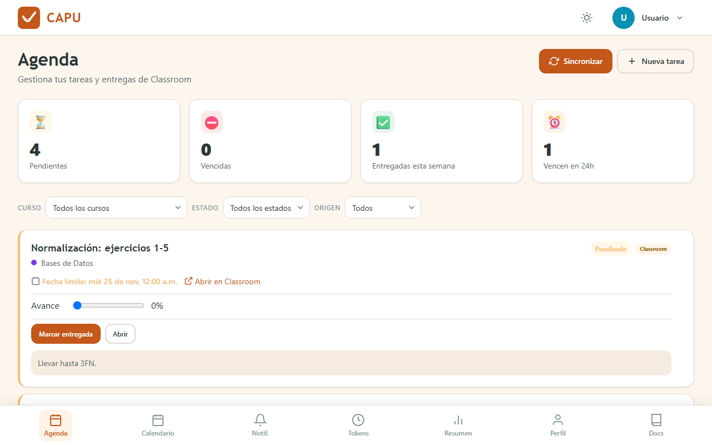
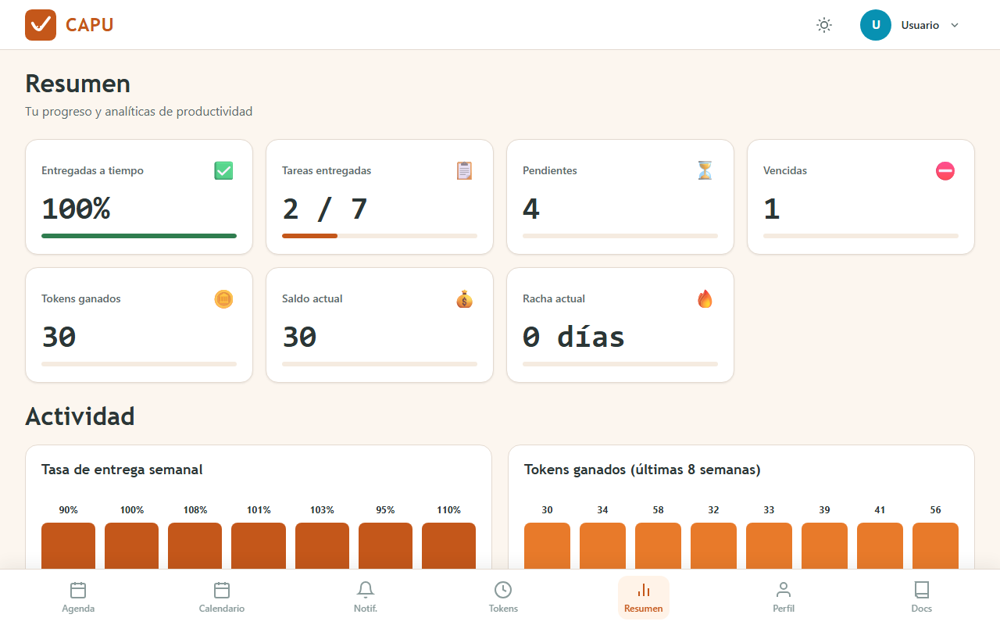
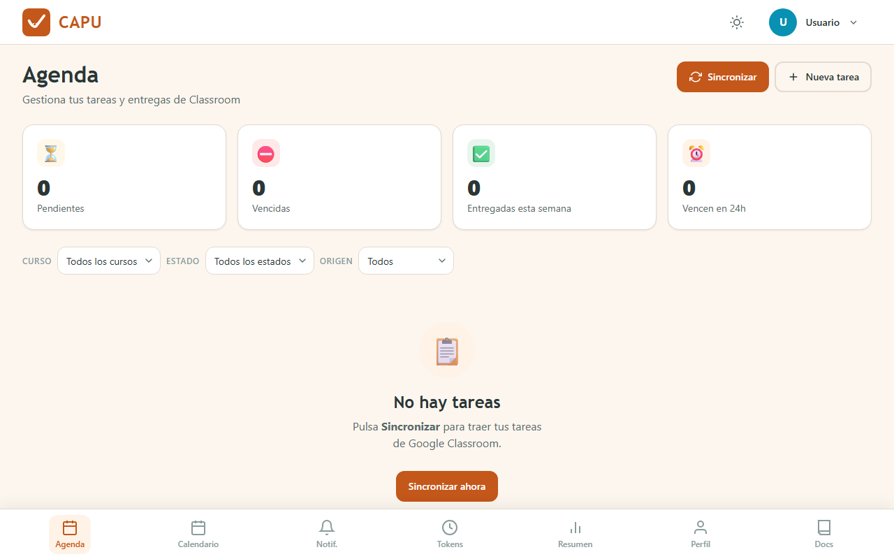
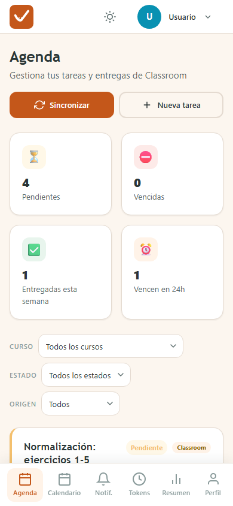

Índice
1. Introducción
CAPU es una agenda inteligente que ayuda a los estudiantes a organizar sus tareas, registrar avances, recibir alertas y mantenerse motivados mediante un sistema de recompensas con tokens. El sistema se integra con Google Classroom para sincronizar cursos, tareas y entregas.
2. Objetivo y alcance
Objetivo: Optimizar la gestión del tiempo académico mediante recordatorios automáticos, seguimiento de avances y un sistema de recompensas con tokens.
Alcance: Inicio de sesión (email/password y Google OAuth), sincronización con Google Classroom, agenda con filtros, registro de avance, recordatorios/alertas, tokens y recompensas, notificaciones, métricas y documentación.
3. Requisitos e instalación
Requisitos
- Node.js 22.5 o superior.
- Navegador web moderno (Chrome, Edge, Firefox).
- (Opcional) Credenciales de Google Cloud para sincronización real con Classroom.
Instalación y ejecución local
| Paso | Comando / Acción |
|---|---|
| 1. Clonar | git clone https://github.com/VictorMBojorquez/Capu.git |
| 2. Instalar dependencias | cd capu && npm install |
| 3. Configurar entorno | cp .env.example .env (Windows: copy .env.example .env) |
| 4. Iniciar | npm start — abrir http://localhost:3000 |
| 5. Pruebas | npm test (41 pruebas automatizadas) |
GOOGLE_CLIENT_ID y GOOGLE_CLIENT_SECRET en .env.4. Uso del sistema por módulos
Agenda
Visualiza tareas sincronizadas desde Classroom, filtra por curso/estado, revisa detalles y registra avances. Permite marcar tareas como completadas para obtener tokens.
Calendario y notificaciones
Consulta tareas por fecha y revisa alertas de vencimiento o próximas entregas. El centro de notificaciones muestra recordatorios y avisos.
Tokens y recompensas
Al entregar tareas a tiempo se otorgan tokens. La racha y bonos incrementan la recompensa. Los tokens pueden canjearse por recompensas disponibles.
Resumen y perfil
El resumen muestra métricas de productividad. En perfil se gestionan datos del usuario y preferencias.
Documentación
La página de documentación dentro de la app incluye la guía y capturas del sistema para consulta rápida.
5. Capturas del sistema
Capturas tomadas desde la aplicación CAPU ejecutada localmente.









6. Solución de problemas
| Problema | Causa probable | Solución |
|---|---|---|
| No carga la página | Servidor no iniciado o puerto ocupado | Ejecutar npm start y verificar http://localhost:3000. |
| No sincroniza con Classroom | Faltan credenciales OAuth | Configurar GOOGLE_CLIENT_ID y GOOGLE_CLIENT_SECRET en .env. |
| Error al iniciar sesión con Google | Redirect URI o credenciales inválidas | Revisar configuración en Google Cloud y variables de entorno. |
| No aparecen tareas | No se ha sincronizado | Usar el botón "Sincronizar con Classroom" o verificar conexión. |
7. Conclusión
CAPU cumple el objetivo de apoyar la organización académica mediante una agenda integrada con Google Classroom, alertas, seguimiento de avances y gamificación con tokens. El sistema es funcional, demostrable y cuenta con pruebas automatizadas (41/41) y documentación de soporte para su uso y entrega.